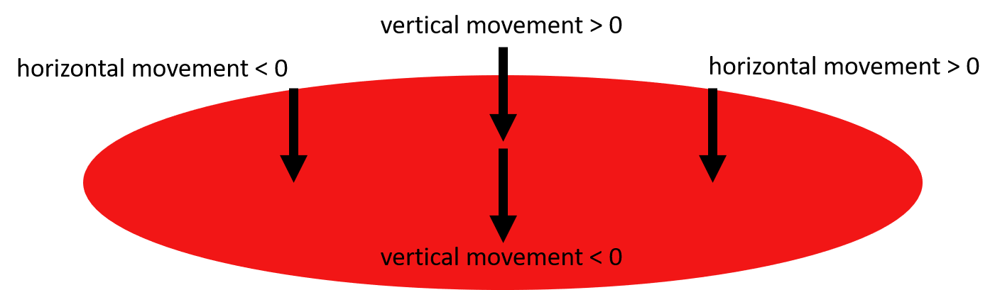

This exercise sheet revolves around Unity as an example of a render engine. Using render engines, you can quickly prototype both 2D and 3D programs using their powerful in-built properties such as physics engine, lighting and behavior through simple scripting.
For both Basic and Advanced part, we want you to program a little game from scratch – with Unity, this is easier than one might expect.
If you only do the Basic part, the game will not be complete, but you can already win/lose it.
If you additionally do the Advanced part, the game has all features.
We use Unity 2018.3.0f2, which can be downloaded for free for your own PC.
In the CIP-Pool it is already installed and you can use module load unity/2018.3 to get access.
If you don't have one already, you will need an account and a license which can easily be created following the instructions in the first access and which is free for personal, educational and even commercial use up to a certain income.
If you don't want to create an account by all means, feel free to skip this exercise, this exercise is the only one we will need Unity for.
However bare in mind, that you will be missing the points and the experience if you do so.
The game consists of a moving circular plane, a ball rolling on it and coins spawning at random locations. The player’s task is to tilt the plane and let the ball roll around to collect as many coins as possible and get as big as possible. Every time the ball collects a coin, it gets bigger, making it easier to collect more coins. A size decay lets it shrink again when no coins are collected. But beware – the game is over when the ball rolls off the plane! In the picture below, you can see a screenshot of Get Big or Die Tryin’. There is also a small reference video in your exercise folder to show you the game in action.
Open Unity and create a new Unity ID or login with your existing ID if you already have one. Choose Unity Personal to use Unity free of charge. By clicking "New", create a new project. Call your project “GetBig” and choose a location of your choice for saving. Projects are saved in folders. In the end, you will have to zip the "Assets" folder contained in the project folder and upload it as your solution.
Once you are done, click "Create" to enter your project. Your empty project screen is divided into several windows. In the middle, you see the scene view, so far consisting of only a camera and a directional light. The hierarchy view on the left shows you a synopsis of the current objects in your scene. The most important window is the Inspector on the right. It opens up to let you inspect the properties of an object selected via click. You can select camera or light source to test this. Your newly created scene is saved as "SampleScene". Always make sure you save it in between programming steps.
As a first step, you need the three objects the game consists of. Every object in Unity belongs to the class GameObject. Unity provides some 3D primitives as pre-built GameObjects. You can create them selecting GameObject $\rightarrow$ 3D Object in the ribbon at the top. Create the following three GameObjects:
- for the ground plane: Create a cylinder object. In the Inspector, set its scale to 10 in x and z direction and 0.1 in y direction to make it a plane. In the Project window on the bottom, create a new material using right click $\rightarrow$ Create $\rightarrow$ Material and call it "GroundMaterial". In the Inspector, set the material's albedo color to red, then drag it onto the ground plane to color it with the new material.
- for the ball: Create a sphere object. Set its scale to 0.5 in all directions and lift it to y=2 either using the position property in the inspector or the green arrow.
- for a coin: Create a cylinder again. This time, scale it to 0.5 in x and z direction and 0.05 in y direction to account for a coin's size. Turn it around the x axis by 90 degree to let it stand rather than lie. Place it somewhere over the ground. Create a new material "CoinMaterial" with yellow albedo and metallic property set to 1, and color the coin with it.
You can see the three created objects showing up in the hierarchy on the left. Call them "Ground", "Ball" and "Coin" for better overview. When you are done, you can click on the play button at the top to enter game mode. It should look like the image below.

So far, the ball does not follow physics: As you can see, it does not fall onto the plane. For a GameObject to be affected by physics, it has to have a "Rigidbody" component attached to it. In the Inspector, click "Add Component", search for "Rigidbody" and attach the component. In this component, activate gravity.
As you can see, the ball still does not fall. This is because the collider for the ground plane is too big. For physics, so-called colliders are used, which are visualized through green lines. As the ground plane was created as a cylinder, it has a capsule collider attached to it (again, as a component). Remove this component by right-clicking on it, add a "Mesh Collider" component and make it convex. Now you can press Play and watch the ball fall.
For the plane as well, add a Rigidbody component. In the component's properties, deactivate the influence of gravity. Furthermore, prevent the plane from changing its position using the Rigidbody's constraints.
Now it is time to move the plane.
Behavior is added through scripts coded in C#.
Add a new script as a new component to the plane.
Call it "MovePlane" and click "Create and Add".
Right-click on the new component and choose "Edit Script".
Visual Studio opens up and shows you the newly created class "MovePlane" which inherits from "MonoBehaviour" and has to implement the two functions "Start" and "Update".
Start() is executed once at the beginning of the program, Update() is called in a loop every cycle.
You can get the values for horizontal (A and D or left and right arrow key) and vertical (W and S or up and down arrow key) using
Input.GetAxis.
In the CIP, make sure to use WASD rather than the arrow keys to get proper values.
As a first step, get the two values for horizontal and vertical movement inside Update() and use
Debug.Log to show them on the console (at the bottom
of the Unity window) at runtime.
The values returned are between -1 and 1.
As you will notice, Unity simulates joystick control by interpolating between 0 and -1/1, so you will also receive values in between.
Instead of just printing the horizontal and vertical movement values, you should now use them to add different forces to the ground plane. Unity's physics engine will then take the forces into account and tilt the plane correctly. Use Rigidbody.AddForceAtPosition to add forces like shown in the image:

You need two AddForceAtPosition statements: One for horizontal (left-right, x direction) and one for vertical (front-back, z direction) tilt.
The forces should be applied in a distance of 1 to the center, always facing to the bottom, so the plane is "pressed" down
at one side.
Use Transform.TransformPoint and
Transform.TransformDirection to transform
positions/directions relative to the plane to absolute (= world-space) positions/directions.
To call AddForceAtPosition, you need the objects Rigidbody component.
You can get access to it using GameObject.GetComponent.
Create a private variable of the type Rigidbody, use GetComponent only once in the Start() method
and store the result in your newly created variable to have access to it in the Update() method.
You should now be able to tilt the plane and let the ball roll along it. You will notice that the ball is too heavy for the plane - set its mass to 0.1 rather than 1.
The task of this - rather easy - game is to reach the coin with the ball before it falls off the plane! Of cause, we can make this game more interesting in the Advanced part. Nevertheless, if you want to submit the Basic exercise, you can hand in the zipped Assets folder at this point.